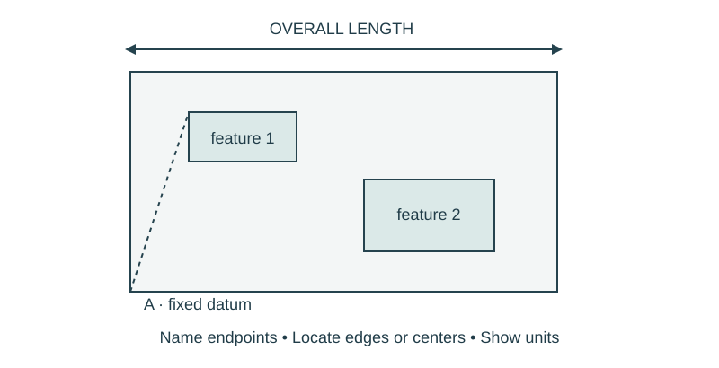

Job 32 · Survey for the proposal
A checked site survey and a list of unresolved measurements.
110 minutes • Tape measure + pocket notebook • Name: __________________ Date: __________
Materials: Tapes, notebooks, graph/loose paper; approved school zone.

Brief · 12 min
- Which missing measurement could make your proposal fail even if all arithmetic is correct?
- Set up a dated notebook spread: sketch and readings on the left; calculation, decision, test, and revision on the right. Mark small sketches NTS unless drawn to a chosen scale.
- Work in pairs and rotate roles. Each student keeps an individual notebook and performs a tool action and a calculation.
Measure · 18 min
- Establish a datum and orientation for the selected project.
- Measure boundaries, relevant feature offsets, and operating/access space at reachable locations.
- Repeat two critical dimensions independently; keep both readings and note discrepancies.
Plan · 20 min
- Prepare a dimensioned NTS survey or a scale plan with a labeled scale.
- Use a dimension-string check against a direct overall measurement.
- Create an unknowns list rather than guessing inaccessible dimensions.
Worked example
A width reads 47 3/4 in from one pass and 47 7/8 in from another. Find disagreement and decide what to do before specifying a tight fit. Disagreement = absolute difference between readings. 1/8 in. Recheck endpoints, tape alignment, and required clearance; averaging alone does not establish the true fit.
Make · 28 min
- Give the survey to another team for a reconstruction on paper.
- They identify every ambiguous endpoint or missing feature.
- Revisit the site within teacher-approved access and issue a corrected survey.
Test · 20 min
- Critical features can be located from the drawing.
- Checks and unresolved dimensions are visible.
- Every student performs and records at least one actual measurement.
Explain · 12 min
- Complete the individual exit below before discussing answers.
- Add the test result, revision, and notebook page reference to your response. Use the notebook as evidence rather than retyping every page.
- Save the three selected responses and submit the lesson for teacher review. Show your physical work and notebook to the teacher. Clean up and return shared supplies.
Individual exit
A 120-in overall dimension contains 38 1/2 in, 44 3/4 in, and one missing segment. Find the missing segment. Identify your project’s most important measurement check.